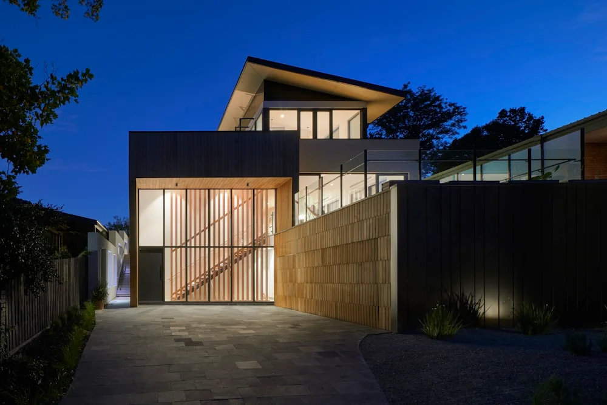
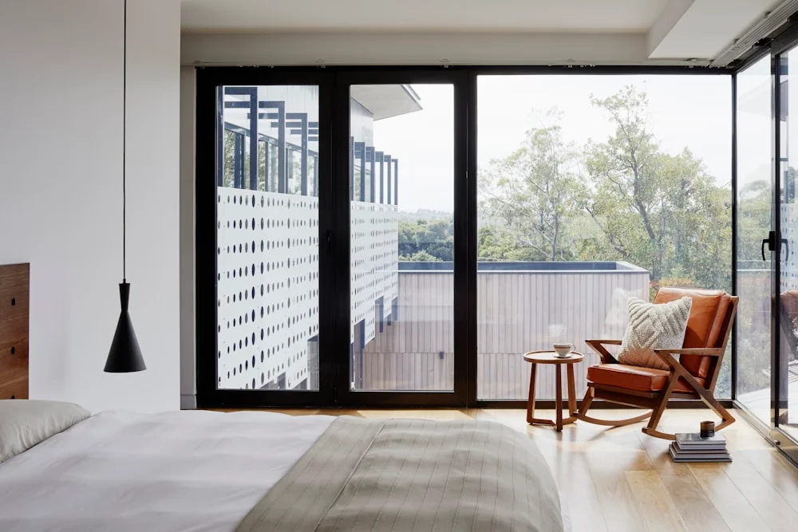

5 Min Baca
5 Keunggulan Pintu Lipat Aluminium untuk Villa di Kota Batu
Memaksimalkan bukaan teras villa dengan pencahayaan alami serta ketahanan rel stainless beban berat terhadap cuaca dingin.
Baca SelengkapnyaNavigasi lengkap memilih brand profil bukaan aluminium presisi tinggi untuk hunian modern di Malang Raya.

Saat merencanakan pembangunan atau renovasi rumah di kawasan Malang Raya dan sekitarnya, pemilihan material bukaan seperti kusen, pintu, dan jendela menjadi salah satu keputusan krusial. Aluminium kini menjadi pilihan favorit mengalahkan kayu karena sifatnya yang anti rayap, tahan kelembapan tinggi, dan tidak memuai saat perubahan cuaca ekstrem.
Di pasaran Indonesia, dua merek profil aluminium paling ternama dan banyak dipakai oleh arsitek serta kontraktor adalah YKK AP dan Alexindo. Meski sama-sama berkualitas tinggi dan memenuhi standar SNI (Standar Nasional Indonesia), keduanya memiliki karakteristik teknis, ketebalan profil, dan rentang harga yang berbeda.
Ketebalan penampang aluminium sangat menentukan kekakuan struktur saat menopang kaca tebal (terutama kaca tempered 8mm - 12mm) dan ketahanan terhadap tekanan angin di daerah dataran tinggi seperti Kota Batu dan Malang bagian utara.
Estetika bukaan aluminium terletak pada kerapian sambungan di setiap sudut siku. Profil YKK AP diproduksi dengan toleransi presisi yang sangat ketat dari pabrik jepang, sehingga saat dirakit dengan mesin pemotong siku 45°, sambungan sudut menutup tanpa celah kasat mata.
Dari segi lapisan pewarnaan, YKK AP unggul dengan teknologi Anodized Electro-deposition (ED) yang menyatu dengan molekul aluminium. Lapisan ini tidak mudah terkelupas atau pudar meski terpapar sinar UV dan hujan asam secara terus-menerus selama puluhan tahun. Sementara Alexindo menawarkan variasi warna Powder Coating yang sangat kaya (seperti motif urat kayu, putih glossy, dan hitam doff).
Ingin pasangan kusen aluminium presisi tinggi bergaransi resmi dengan garansi kebocoran karet EPDM untuk hunian Anda di Malang Raya? Dapatkan penawaran paket harga pabrik dan cek portofolio pengerjaan kami.
Di daerah Malang yang memiliki intensitas hujan curah tinggi disertai angin, performa isolasi air adalah hal mutlak. Sistem bukaan casement maupun sliding harus dilengkapi jalur buangan air (waterdrainage channel) dan sirip ganda karet sintetis EPDM.
Kombinasi profil YKK AP atau Alexindo yang dirakit rapi oleh teknisi berpengalaman KUSEN ALUMINIUM Malang menjamin air hujan tidak merembes ke celah dinding plesteran, sekaligus mampu mendinginkan dan meredam bising kendaraan dari luar hingga 30 dB.
Jika Anda menginginkan spesifikasi kelas premium dengan durabilitas terbaik untuk jangka panjang 20+ tahun dan budget memadai, YKK AP adalah pilihan nomor satu. Namun jika Anda mencari solusi kusen aluminium elegan berstandar SNI dengan nilai ekonomis yang tinggi untuk rumah tinggal minimalis, Alexindo adalah keputusan yang sangat bijak.
Tim teknisi kami siap melakukan survei lokasi dan memberikan estimasi RAB gratis untuk hunian Anda.
Konsultasi Teknis via WhatsApp
Memaksimalkan bukaan teras villa dengan pencahayaan alami serta ketahanan rel stainless beban berat terhadap cuaca dingin.
Baca Selengkapnya
Panduan teknis pencegahan rembesan air hujan dan peningkatan peredaman suara bising lingkungan sekitar rumah.
Baca Selengkapnya
Menciptakan sekat ruangan kantor transparan yang tampak mewah, hemat energi, dan kedap suara untuk rapat bisnis.
Baca Selengkapnya